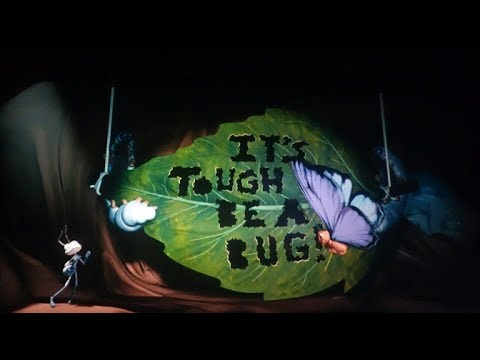

 It's Tough to be a Bug is a 4D experience at Disney's Animal Kingdom. It consists of an experience that requires "bug-eye" 3D glasses, as well as a sort of live performance with animatronics. The show takes guests through an educational session about how difficult it is for bugs in the world, so the host, Flik, brings in a lot of other memorable characters from the Pixar film, A Bug's Life and allows them to show how helpful they are to human society, as well as why they should not be exterminated. Like usual though, the show is interrupted by Hopper, a grasshopper who believes he is above Flik, an ant in the bug world. Hopper attempts to convince Flik that humans are the root of all evil in the bug world and that they need a taste of their own pesticides. An animatronic of Flik and an animatronic of Hopper are supposed to talk back and forth, Flik tying to protect guests, who he deems as "honorary bugs" from Hopper's wrath. Of course, animatronics usually end up having issues, even if they work well for years after an attraction opens. Recently, Hopper has not made the show, his lines spoken from out of sight.
"at least they didn't add strobe lights" Apparently Hopper, now nicknamed "Disco Hopper" by some Animal Kingdom fans, after the other nutorious broken animatronic, Disco Yeti, has decided to take a little field trip away from his duties as the show's antagonist. While the show has been open since opening day at Animal Kingdom in 1998, the Hopper animatronic has not had many long-term issues. But, as it is got older, Hopper began losing some of his extreme range of motion. During some appearances, he only moved part of his body, his mouth usually the first joint to stop working. Once he starts malfunctioning majorly though, Hopper leaves the show all together, leaving the audience with a disembodied voice speaking to Flik. The most unsettling part about this is not the disembodied voice though. It actually is the on-screen interaction that is supposed to occur between Flik and Hopper. Flik looks at where Hopper is meant to stand and talks to an empty piece of stage. It seems animators need to make a sort of "B-Mode" for this attraction for when Hopper is not working, to make his dissapearance less noticable (perhaps shadows to imply Hopper is outside, and a look of confusion on Flik's face instead of him looking straight to the empty stage).
While Hopper has been an "off and on" performer during the show, some days there and some days gone, recently, Hopper has been missing entirely. Cast members that work in the ride, have specified that "Hopper will be back in a few weeks," but it has been months since his face has last been seen fully operating. Most days, guests are left with the "Disco Hopper" effect, which is arguably better than a broken Hopper being limp on his stand. Hopefully, the imagineers will get Hopper being back to 100% by the end of Spring, and he will be back arguing with Flik before long.